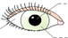
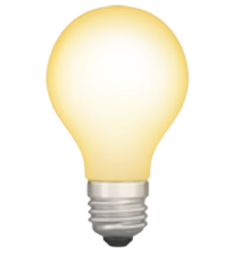

1 Der Aufbau des menschlichen Auges
Zu Hause steht Tim vor dem Spiegel und beobachtet seine Augen. Seine grünen Augen sehen aus wie immer. Er überlegt, wie das Sehen funktioniert: Ganz klar, zum Sehen brauchen wir unsere Augen. Licht muss auch da sein, weil wir im Dunkeln nicht sehen können.
Tim erkennt seine grüne Iris. Außerdem sieht er seine Pupille, die eigentlich nur ein Loch in der Iris ist. Durch die Pupille fällt Licht in das Auge ein. Tim sieht auch den weißen Teil seines Auges. Dieser Teil heißt Lederhaut. Das gesamte Auge wird auch als Augapfel bezeichnet.
Ordne die Begriffe zu. Klicke auf das Wort und ziehe es an die richtige Stelle:
Iris
Pupille
Lederhaut

Damit das Sehen funktioniert, sind besonders die Iris und die Pupille, die Linse und die
Netzhaut
erforderlich. Die Linse und die Netzhaut sind von außen nicht sichtbar.